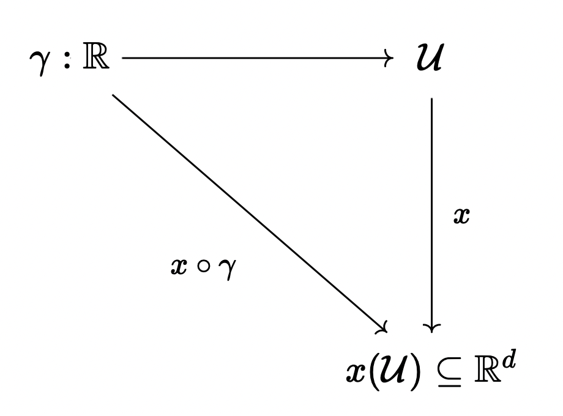
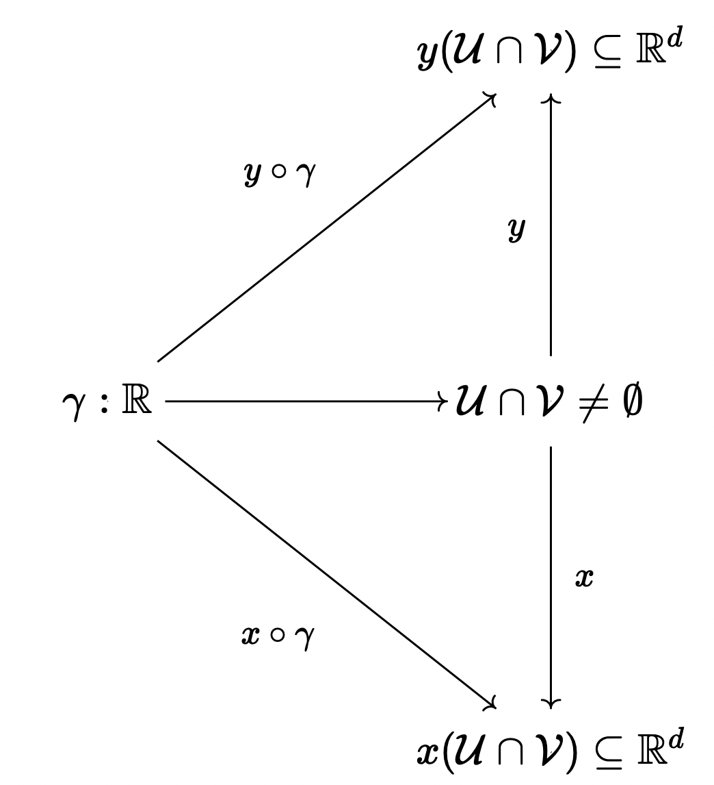
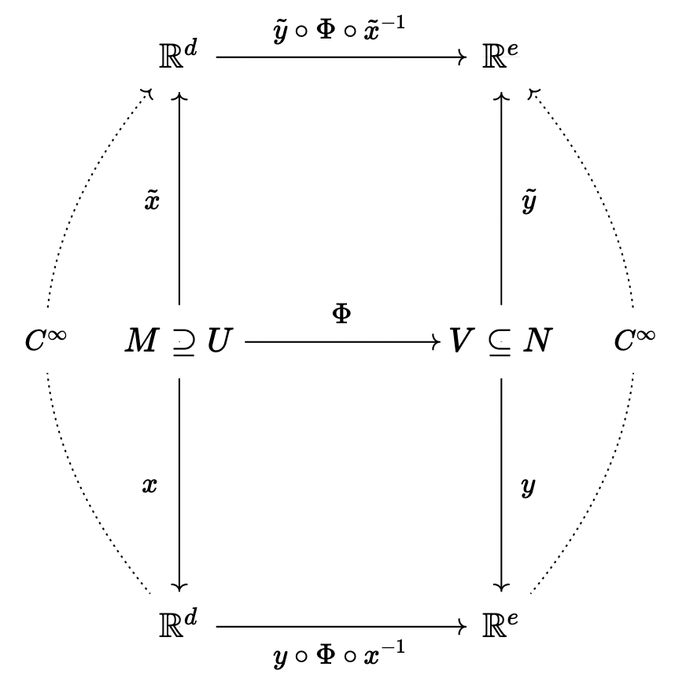

2 Differentiable Manifolds
We are now considering differentiable manifolds. So far, we looked at topological manifolds which, roughly speaking, we would like to extend to allow us to define a velocity to each point on a curve. Is the structure (\mathcal{M}, \mathcal{O}) enough to talk about differentiability of curves? No! We need to make more choices (i.e. add more structure) before we can discuss differentiablility of a curve.
We wish to define a notion of differentiable… \begin{align} \gamma &:\mathbb{R} \to \mathcal{M} \text{ (curves) } \\ f&:\mathcal{M} \to \mathbb{R} \text{ (functions) } \\ \phi &: \mathcal{M} \to \mathcal{N} \text{ (maps) } \\ \end{align}
2.1 Strategy
Let’s consider curves \gamma: \mathbb{R} \to \mathcal{M}. We don’t know what to do with this object on a manifold so what do we do? We consider the portion of the curve that lies in the chart domain of (U, x).

The idea is to try to lift the undergraduate notion of differentiability of the curve on \mathbb{R}^d (i.e. of x\circ\gamma) to a notion of differentiability of the curve on the manifold \mathcal{M} (i.e. of \gamma itself**.

Problem: How do we make this well defined under change of chart? In other words, in Figure 2.2 does differentiability of x\circ\gamma guarantee differentiability of y\circ\gamma?
From Figure 2.2, we see that \begin{align} y \circ \gamma &= (y\circ x^{-1}) \circ (x \circ \gamma) \\ &= y \circ (x^{-1} \circ x) \circ \gamma \end{align}
We already confirmed that x\circ \gamma is (undergraduate) differentiable as a function from \mathbb{R}\to\mathbb{R}^d. Since we are working with topological manifolds and assuming that the chart transition maps are continuous, then the most we can say about y\circ x^{-1} is that it is continuous. As we are composing a continuous map with a differentiable map, the answer is that y\circ \gamma is maybe differentiable.
What is the remedy for this problem?
2.2 Compatible Charts
In the previous section, we considered any imaginable charts (\mathcal{U}, x) in our topological manifold (\mathcal{M}, \mathcal{O}).1 We have seen that this is not sufficient to enable differentiablility of curves, functions, and maps. Therefore, we seek to limit the set of allowed charts to only those charts whose transition maps are differentiable.
1 To emphasise this, we may say that we took these charts (\mathcal{U}, x) from the maximal Atlas \mathscr{A} of (\mathcal{M}, \mathcal{O}).
Definition: Two charts (\mathcal{U}, x) and (\mathcal{V}, y) are called \ast-compatible if either:
- \mathcal{U}\cap\mathcal{V} = \empty
- \mathcal{U}\cap\mathcal{V} \neq \empty and the chart transition maps y\circ x^{-1} and x \circ y^{-1} are (undergraduate) \ast.2
2 Here we use \ast as there are different types of compatibility we may care about. Here, we are specifically interested in differentiably compatible.
Definition: An atlas \mathscr{A}_{\ast} is an \ast-compatible atlas if for any two charts in \mathscr{A}_{\ast}, the charts are \ast-compatible.
For physics this is a really down to Earth question. Am I choosing the right structure here?
| \ast | udergraduate - \ast | description |
|---|---|---|
| C^0 | C^{0}:\mathbb{R}^d\to\mathbb{R}^d | continuous maps w.r.t. \mathcal{O}_{st} |
| C^{1} | C^1:\mathbb{R}^d \to \mathbb{R}^d | differentiable (once) with continuous result |
| C^k | \vdots | k-times continuously differentiable 3 |
| D^k | \vdots | k-times differentiable |
| C^\infty | \vdots | infinitely differentiable, aka smooth |
| C^\omega | \vdots | \exists a multidemnsional Taylor expansion |
| \mathbb{C}^\infty | \vdots | For even dimensional manifold that are smooth and satisfy the generalized Cauchy-Riemann conditions 4 |
3 Typically, C^k is more favored than D^k.
4 Generally, the further down you go in this table, the more conditions you add and therebore more resitrictions you impose on your atlas \mathscr{A}.
The natural next question is: To what degree to derivatives appear in physics? It turns out we don’t need to worry!
Theorem: (Whitney) Any C^k-atlas, \mathscr{A}_{C^k} with k\geq 1 contains a C^\infty atlas.
Upshot: If we have a C^k atlas, we can always keep tossing out charts until we are left with a C^\infty atlas.5
5 Thus we may always consider smooth C^\infty manifolds without loss of generality unless we wish to define Taylor Expandability, Complex Differentiability, …
2.3 Diffeomorphisms
Consider maps \Phi:\mathcal{M}\to\mathcal{N}
- If M,N are naked sets, the structure preserving maps are the bijections (the invertible maps)
- A set M and N are called set-theoretically isomorphic, M\cong N if there exists a bijection \Phi between them.6
- If we have topoologies (\mathcal{M}, \mathcal{O}_M), (\mathcal{N}, \mathcal{O}_N), the structure-preserving maps are the homeomorphisms (i.e. continuous bijections)
- If this exists, then we call the two spaces topologically isomorphic (or homeomorphic)
- If we have vector spaces U, V. Then the structure-preserving maps are again bijections that are both ways linear
- Two C^\infty manifolds (\mathcal{M}, \mathcal{O}_m, \mathscr{A}_m) and (\mathcal{N}, \mathcal{O}_n, \mathscr{A}_n) are said to be Diffeomorphic if a bijection, \Phi exists and \Phi and \Phi^{-1} are both C^{\infty} maps.7
6 \mathbb{N} \cong \mathbb{Z}, \mathbb{N}\cong \mathbb{Q}, but \mathbb{N}\not{\cong} \mathbb{R}.
7 As in Figure 2.3

Theorem: The number of C^\infty manifolds one can make out of a give C^0 manifold up to diffeomorphism
| dim \mathcal{M} | # |
|---|---|
| 1 | 1 |
| 2 | 1 |
| 3 | 1 |
| 4 | generically (in particular for non-compact manifolds): uncountably infinitely many |
| \vdots | \vdots |
| d>4 | finitely-many (via surgery-theory) |